전자기기기능사 (2005-10-02 기출문제)
1과목: 전기전자공학
1. 그림에서 시정수가 매우 작을 경우의 출력파형은?
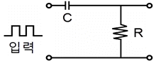
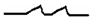
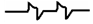
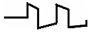
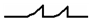
(정답률: 76%)

2. 저항 25Ω, 리액턴스 7Ω의 부하에 100V를 가할 때 전류의 유효분은 몇 A인가?
- 1.51
- 2.51
- 3.84
- 4.61
(정답률: 61%)
3. 10V의 전압원이 2Ω의 저항과 직렬로 연결되어 있다. 등가 전류원으로 옳은 것은?
- 5A의 전류원과 2Ω의 저항이 직렬로 연결된다.
- 5A의 전류원과 2Ω의 저항이 병렬로 연결된다.
- 2A의 전류원과 5Ω의 저항이 직렬로 연결된다.
- 2A의 전류원과 5Ω의 저항이 병렬로 연결된다.
(정답률: 51%)
4. 전류를 연속해서 흘려주면 전압을 연속적으로 만들어 주는 어떤 힘이 필요하게 되는데, 이 힘을 무엇이라 하는가?
- 전력
- 회전력
- 구동력
- 기전력
(정답률: 63%)
5. 부울대수의 공리에서 분배법칙은?
- A＋B=B＋A
- (AㆍB)ㆍC=Aㆍ(BㆍC)
- Aㆍ(B＋C)=AㆍB＋AㆍC
- (A＋B)＋C=A＋(A＋B)
(정답률: 74%)
6. 이미터 접지 블로킹 발진회로에서 베이스 회로의 콘덴서나 저항값을 크게 증가시켰을 때 발생하는 현상은?
- 발진이 멈춰버린다.
- 발진주파수가 낮아진다.
- 발진주파수가 높아진다.
- 발진출력의 진폭이 증가한다.
(정답률: 54%)
7. 이상적인 연산증폭기의 조건으로 틀린 것은?
- 대역폭이 1이다.
- 입력 임피던스가 ∞이다.
- 출력 임피던스가 0이다.
- 전압이득이 -∞이다.
(정답률: 46%)
8. 고정 바이어스 회로를 사용한 트랜지스터의 ℬ가 50이다. 안정도 S는 얼마인가?
- 49
- 50
- 51
- 52
(정답률: 74%)
9. 다음의 진리표는 무슨 회로인가?
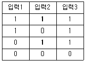
- AND 회로
- OR 회로
- NOT 회로
- NAND 회로
(정답률: 72%)
10. 정보신호에 따라 반송파의 진폭이 변화되는 것을 무슨 변조라 하는가?
- AM
- FM
- GM
- PM
(정답률: 50%)
11. 그림과 같은 콘덴서 회로의 합성정전용량은 몇 F인가?
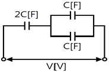
- C
- 2C
- 3C
- 4C
(정답률: 54%)
12. 그림은 어떤 전력용 반도체의 특성곡선인가?
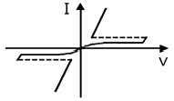
- SSS
- UJT
- FET
- MHS
(정답률: 35%)
13. 다이오드를 사용한 정류회로에서 2개의 다이오드를 직렬로 연결하여 사용하면?
- 부하 출력의 리플전압이 커진다.
- 부하 출력의 리플전압이 줄어든다.
- 다이오드는 과전류로부터 보호된다.
- 다이오드는 과전압으로부터 보호된다.
(정답률: 46%)
14. 정류기의 평활회로에는 어느 것을 이용하는가?
- 고역필터
- 저역필터
- 대역필터
- 변조필터
(정답률: 68%)
15. 슈미트 트리거(schmitt trigger)회로는?
- 톱니파 발생회로
- 계단파 발생회로
- 구형파 발생회로
- 삼각파 발생회로
(정답률: 59%)
2과목: 전자계산기일반
16. 전자유도현상에 의하여 생기는 유도 기전력의 크기를 정의 하는 법칙은?
- 렌쯔의 법칙
- 페러데이의 법칙
- 앙페에르의 법칙
- 맥스웰의 법칙
(정답률: 65%)
17. 프로그램의 처리 방법과 수서를 논리적인 흐름에 따라 단계적으로 일정한 기호를 사용하여 일관성 있게 그림으로 나타낸 것을 무엇이라 하는가?
- 프로그래밍
- 알고리즘
- 순서도
- 코딩
(정답률: 82%)
18. 2진수 100100을 2의 보수(2‘complement)로 변환한 것은?
- 011100
- 011011
- 011010
- 010101
(정답률: 66%)
19. 아래 그림의 순서도 기호의 명칭은?
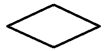
- 비교·판단
- 처리
- 준비
- 단말기
(정답률: 78%)
20. 어떤 명령이 수행되기 위해 가장 우선적으로 이루어져야 하는 마이크로 오퍼레이션은?
- PC→MBR
- PC＋1→PC
- MBR→IR
- PC→MAR
(정답률: 54%)
21. 16(bit)는 몇 (byte)인가?
- 1
- 2
- 3
- 4
(정답률: 51%)
22. 컴퓨터의 중앙처리장치와 주기억장치 간에 발생하는 속도차를 보완하기 위해 개발된 것은?
- 입·출력장치
- 연산장치
- 보조기억장치
- 캐시기억강치
(정답률: 82%)
23. 컴퓨터에 의해 처리된 프로그램 중 잘못된 부분을 수정하는 일을 무엇이라고 하는가?
- 천공(punching)
- 코딩(coding)
- 디버깅(debugging)
- 블록킹(blocking)
(정답률: 78%)
24. 연산장치의 기능이 아닌 것은?
- 보수의 계산
- 2진 가감산
- 정보의 기억
- 논리연산
(정답률: 76%)
25. 중앙처리장치인 CPU의 구성으로 옳은 것은?
- 메모리, I/O
- 본체, 주변장치
- 연산장치, 제어장치
- 기억장치, 입·출력장치
(정답률: 79%)
26. 마이크로프로세서를 구성하고 버스에 해당하지 않는 것은?
- 데이터 버스
- 번지 버스
- 제어 버스
- 상태 버스
(정답률: 47%)
27. 마이크로컴퓨터의 주소가 16비트로 구성되어 있을 때 사용할 수 있는 주기억장치 최대 용량은?
- 8K
- 18K
- 32K
- 64K
(정답률: 75%)
28. 다음 메모리 중 리플레시 하기 위한 별도의 회로와 프로그램이 필요한 것은?
- ROM
- CPU
- DRAM
- SRAM
(정답률: 64%)
29. 1GHz는 몇 Hz인가?
- 103
- 106
- 109
- 1012
(정답률: 73%)
30. 유도형 계기의 특징이 아닌 것은?
- 조정이 용이하다.
- 외부 자계의 영향이 적다.
- 구동 토크(torque)가 크다.
- 직류 적산 전력계로 사용된다.
(정답률: 43%)
3과목: 전자측정
31. 스위프 발진기의 발진 주파수 소인에 사용되는 전압 파형으로 옳은 것은?
- 사인파
- 톱니파
- 구형파
- 펄스파
(정답률: 47%)
32. 측정 감도가 높아 정밀 측정에 가장 적합한 측정법은?
- 영위법
- 편위법
- 반경법
- 직편법
(정답률: 63%)
33. 참값이 100V인 전압을 측정한 값이 99V였다면 백분율 오차는 얼마인가?
- -1
- -0.91
- 0.0101
- 1
(정답률: 60%)
34. 다음 그림은 주파수 측정 브리지의 일종이다. 어떤 형의 브리지인가? (단, M : 상호인가인덕턴스)
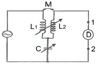
- 빈 브리지
- 공진 브리지
- 휘트스톤 브리지
- 캠벌 브리지
(정답률: 54%)
35. 서보 모터(Servo Motor)에 의한 기록계기는?
- 직동식
- 타점식
- 자동평형식
- 불평형식
(정답률: 66%)
36. 고주파 전력 측정 방법이 아닌 것은?
- 의사 부하법
- 3전력계법
- C-C형 전력계
- C-M형 전력계
(정답률: 49%)
37. 디지털 계측기에 대한 설명 중 옳지 않은 것은?
- 측정하기가 매우 쉽고, 신속히 이루어진다.
- 측정값을 읽을 때 개인적인 읽음 오차가 발생하지 않는다.
- 잡음에 대하여 아주 민감하여 측정 정도를 높일 수 있다.
- 측정에서 얻어진 디지털 정보를 직접 전자계산기에 넣어서 데이터 처리를 할 수 있다.
(정답률: 60%)
38. 전압 측정 시 계측기에 흐르는 미소 전류에 의한 전압 강하로 발생되는 오차를 줄이는 방법은?
- 계측기의 입력 저항을 크게 한다.
- 미끄럼줄의 마찰에 의한 저항 변화를 줄인다.
- 전압 분압기로 1V정도 전압을 낮춰 측정한다.
- 계측기에 배율기를 사용하여 측정 범위를 넓힌다.
(정답률: 35%)
39. 지시계기의 구비 조건이 아닌 것은?
- 절연 내력이 낮을 것
- 눈금이 균등하든가 대수 눈금일 것
- 확도가 높고, 외부의 영향을 받지 않을 것
- 지시가 측정값의 변화에 신속히 응답할 것
(정답률: 72%)
40. 증폭기의 일그러짐율 측정법이 아닌 것은?
- 필터법
- 공진 브리지법
- 검류계법
- 왜율계법
(정답률: 43%)
41. 푸시풀(push-pull) 전력 증폭기에서 출력파형의 찌그러짐이 작아지는 주요 이유는?
- 두개의 트랜지스터에 인가되는 입력전압의 위상이 동상이기 때문이다.
- 직류성분이 증폭되지 않기 때문이다.
- 기수차의 고조파가 상쇄되기 때문이다.
- 우수차의 고조파가 상쇄되기 때문이다.
(정답률: 50%)
42. 사이클링과 오프셋(offset)이 제거되고 응답속도가 빠르며 안정성이 좋은 제어동작은?
- 온 오프 동작
- P동작
- PI동작
- PID동작
(정답률: 46%)
43. 전자 빔이 시료를 투과할 때 속도가 다른 여러 전자가 생겨서 상이 흐려지는 현상은?
- 색 수차
- 구면 수차
- 라이오존데
- 축 비대칭 수차
(정답률: 72%)
44. 한 개의 NPN 형 트랜지스터와 PNP 형 트랜지스터를 직결하여 등가 PNP형 트랜지스터로 동작시키는 접속은?
- OLT 접속
- SEPP 접속
- DEPP 접속
- 다알링톤 접속
(정답률: 21%)
45. 항공기가 강하할 때 수직면 내에 올바른 코스를 지시하는 것으로 90Hz 및 150Hz로 변조된 두 전파에 의해 표시되는 전파항법 기기는?
- PAR
- 팬마커
- 글라이드 패드
- 지상 제어 진입장치
(정답률: 65%)
4과목: 전자기기 및 음향영상기기
46. 그림과 같은 수상관 회로에서 콘데서 C가 단락되었을 때의 고장 증상은?
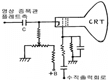
- 라스터는 나오나 화면이 나오지 않는다.
- 라스터가 나오지 않는다.
- 밝아진 채로 어두워지지 않는다.
- 수평·수직동기가 불안정하다.
(정답률: 69%)
47. TV수상기에서 복합 동기 신호 가운데 수평 동기 신호만을 골라내는 회로는?
- 적분회로
- 미분회로
- AFC회로
- AGC회로
(정답률: 45%)
48. 목표값이 변화하지만 그 변화가 알려진 값이며, 예정된 스케줄에 따라 변하할 경우의 제어는?
- 프로그램 제어
- 추치 제어
- 비율 제어
- 정치 제어
(정답률: 54%)
49. 특성 임피던스 75Ω의 선로에 100Ω의 저항 부하를 접속하였다. 반사계수를 구하면?
- 1/7
- 1/8
- 1/9
- 1/10
(정답률: 51%)
50. 마이크로폰의 종류 중 쌍지향성을 갖는 것은?
- 가동코일형
- 리본형
- 크리스탈형
- 콘덴서형
(정답률: 53%)
51. 초음파 가습기의 원리는 초음파의 어떤 작용을 이용한 것인가?
- 소오나
- 펠티어효과
- 회절작용
- 캐비테이션
(정답률: 71%)
52. 수퍼헤테로다인 수신기의 수신주파수가 850kHz, 국부발진 주파수가 900kHz일 때, 영상 주파수는?
- 950kHz
- 850kHz
- 1000kHz
- 1100kHz
(정답률: 47%)
53. 반도체 고유저항의 특성으로서 열에 민감성과 마이너스의 온도계수를 가지는 것을 이용한 소자로서 온도측정, 온도제어, 계전기 등에 이용되는 것은?
- 바리스터
- SCR
- 더어미스터
- 다이악
(정답률: 30%)
54. 비디오 신호를 기록 재생하기 위한 조건으로 가장 거리가 먼 것은?
- 비디오 헤드의 모양을 보기 좋게 한다.
- 비디오 헤드의 갭을 좁게 한다.
- 비디오 헤드와 자기테이프의 상대속도를 크게 한다.
- 비디오 신호를 변조해서 기록한다.
(정답률: 68%)
55. 한 조를 이루는 지상국에서 펄스 대신에 연속파를 발사하여 수신장소에서는 그 위상차를 이용하여 거리차를 알아내는 쌍곡선 항법을 유럽에서 사용했다. 이를 무엇이라고 하는가?
- 데카(decca)
- 로오란(Loran A)
- TACAN(TACTIAL AIR NAVIGATION)
- AN 레인지(AN range)
(정답률: 53%)
56. 아래 그림은 태양 전지의 구조도이다. 음극단자가 연결된 A를 구성하는 물질로서 가장 적합한 것은?
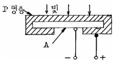
- 셀렌
- 철
- N형 실리콘판
- 붕소
(정답률: 76%)
57. 측심기로 물속에 초음파를 방사하여 2초 후에 반사파를 받았다면 물의 깊이는 얼마인가? (단, 바닷물 속의 초음파속도는 1527m/sec이다.)
- 763.5m
- 1527m
- 3⑤4m
- 6108m
(정답률: 67%)
58. 전자냉동은 다음 중 무슨 효과를 이용한 것인가?
- 제어백 효과(Seebeck effect)
- 톰슨 효과(Thomson effect)
- 펠티어 효과(Peltier effect)
- 줄 효과(Joule effect)
(정답률: 79%)
59. 초음파를 수중에 반사하여 그 반사파를 수신하여 목표물의 유무, 목표물의 거리나 방향을 알아내는 장치는?
- 레이더(RADAR)
- 소나(SONAR)
- 케이테이션(CAVITATION)
- 압전기
(정답률: 50%)
60. 자동 음량 조절 회로는 주로 무엇을 이용한 것인가?
- 부궤환
- 정궤환
- 변조
- 검파
(정답률: 52%)